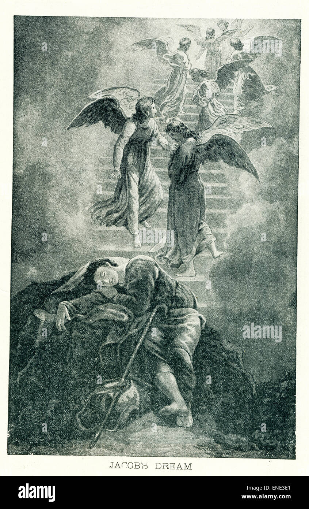
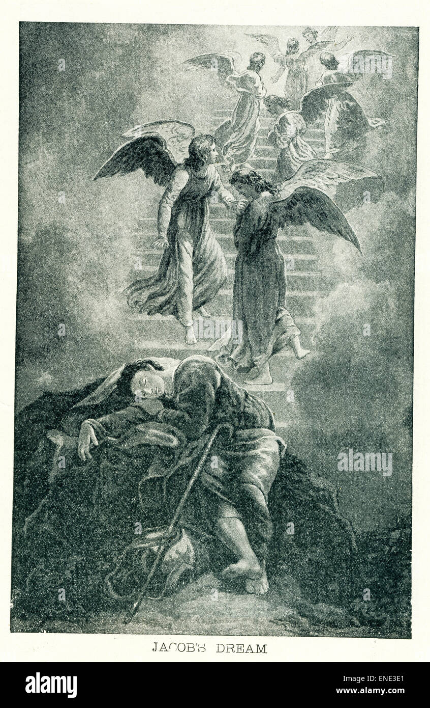
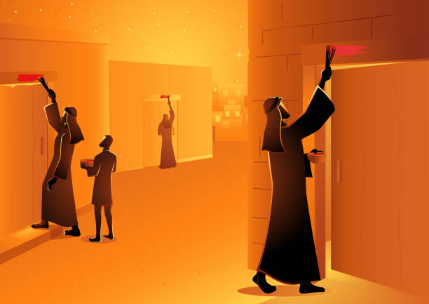

Historical Background
The history of Israel is deeply rooted in the biblical narrative, beginning with the patriarchs Abraham, Isaac, and Jacob, and continuing through the Exodus from Egypt, the establishment of the monarchy, and the prophetic traditions.
 

New Testament Perspectives
The New Testament continues the story of Israel through the life and teachings of Jesus Christ, emphasizing themes such as:
- The Sermon on the Mount: Jesus' teachings on ethics and morality, found in the Gospel of Matthew.
- The Parables: Stories told by Jesus to convey spiritual truths, reflecting the cultural context of first-century Israel.
- The Early Church: The spread of Christianity and its roots in Jewish tradition, as seen in the Acts of the Apostles.
Cultural Practices
Modern Israeli culture is influenced by its biblical heritage, with various practices such as:
- Religious Festivals: Celebrations like Passover, Yom Kippur, and Hanukkah that commemorate historical events.
- Food Traditions: Dishes that have biblical significance, such as matzah during Passover and challah on the Sabbath.
- Art and Literature: Works that draw inspiration from biblical themes and stories, reflecting the ongoing influence of scripture.
